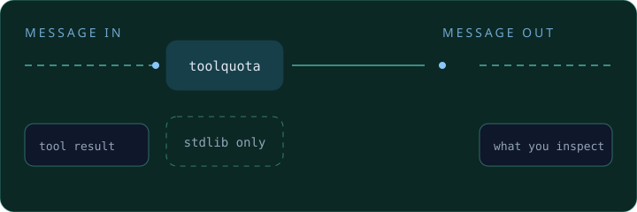

Install
consolepip install toolquota
Use
pythonfrom toolquota import Quota, QuotaExceeded, ToolQuota
quota = ToolQuota(
default=Quota(rate=1, burst=3), # any tool: 1/s, 3 at once
quotas={
"search": Quota(rate=10 / 60, burst=2, max_calls=40),
"browser": Quota(rate=1 / 5, burst=1, max_calls=12),
},
)
def call_tool(name, arguments, tool):
if not quota.try_acquire(name):
wait = quota.wait_time(name)
if wait == float("inf"):
return {"error": f"{name} has used its whole quota for this run"}
return {
"error": f"{name} is rate limited; wait {wait:.1f}s, or tell the user",
"retry_after": wait,
}
return tool(**arguments)
Or let it raise:
pythontry:
quota.acquire("search")
except QuotaExceeded as error:
error.wait_time # seconds, or inf when max_calls is spent
error.permanent # True when no amount of waiting helps
str(error) # "'search' is rate limited; retry in 0.40s"
Reading it back:
pythonquota.remaining("search") # calls available now
quota.calls("search") # calls taken since reset
quota.report() # {"search": {"calls": 7, "available": 1.4}}
quota.reset() # new run
How the bucket works
- each tool starts with a full bucket of
burstcalls - calls are deducted on acquire; tokens refill at
rateper second, capped atburst max_callsis an absolute cap for the run and never refills — use it for paid tools
and for tools that must not be hammered at all
wait_timeis exact for a token bucket:(count - available) / rate- the clock is injectable, so tests do not sleep:
pythonnow = 0.0
quota = ToolQuota(clock=lambda: now)
Rules
- A quota is per process. Two workers each get their own bucket, which is usually right
for an agent and wrong for a shared API key — share a bucket through your own store if that is the case.
rateis calls per second:Quota(rate=10/60, burst=2)is ten calls a minute.try_acquirenever blocks and never sleeps. Sleeping is the caller's decision, which
is why wait_time is returned rather than used.
reset()at the start of a run, or keep one object for the process if the limits are
really per process.
Limits
- It limits; it does not queue or schedule. There is no async version: a token bucket is
arithmetic, so call it from either kind of code.
- No distributed store, no Redis backend, no persistence. Deliberate: a limiter that
needs a server is a limiter that breaks the run when the server is down.
- Retries of a failed call count against the quota, which is what the server sees too.
Development
consolepython -m venv .venv
.venv/bin/pip install -e ".[test]"
.venv/bin/pytest
License
MIT.